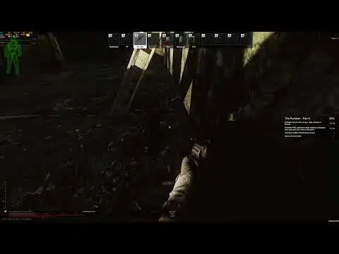

Hazardifier
- Downloads
- 4,790
- Favourites
- 8
- Mod lists
- 7
This mod only adds/modifies claymores. For minefields check out Visible Minefields by pein
Have you ever thought DeHazardifier was unfair, and made the game too easy? Now you can balance things out by making your game damn near impossible. Randomly spawn claymores all around the map, with or without laser tripwire indicators, to make your time in Tarkov a living hell.

Configuration (Accessible via F12 menu, take effect on next raid)
Enable New Claymores (Default: true):
Whether to enable randomized claymores
Claymore Disarm Timer (Default: 5):
The amount of time (in seconds) it takes to disarm a claymore
Allow Arming Claymores (Default: true):
Whether to allow re-arming a claymore after you’ve disarmed it
Convert BSG Claymores (Default: false):
Whether to convert BSG claymores to new custom claymore implementation with laser indicators
Make BSG Claymores Shootable (Default: true):
Whether to make BSG claymores explode when shot. Ignored if Convert BSG Claymores is enabled
Disable Lasers (Default: false):
Disable the visibility of the trip lasers on claymores, giving no external indication where claymores are or whether they’re active
April Fools Mode (Default: false):
Whether to make the random claymores harmless, but still give a concussion/blinding effect. This is the mode used in the SPT 2024 April Fools release
Map Claymore Settings:
The amount of new claymores to place on each map. Set to 0 to disable claymores on that map. Higher = higher performance hit
Note: A modified version of this mod was used for the SPT 2024 April Fools day prank, and I’ve finally gotten around to cleaning it up and packaging it as a mod to ship.
Installation
1) Open the downloaded zip file in 7-zip
2) Select the folder in the zip file in 7-zip
3) Drag the selected folder from 7-zip into your SPT folder
Demonstration Video (Yes, it’s Quest Tracker, but the same concept applies to all of my mods, I’m not making mod-specific extraction example videos):

Compatibility
- There are no known conflicts
If you enjoy my work, you can feed my caffeine addiction
Version
1.3.0
- Update for SPT 4.0.0
Version
1.2.0
This version will only work with SPT 3.11.x
Update for SPT 3.11
Version
1.1.0
This version will only work with SPT 3.10.x
- Update for SPT 3.10.0